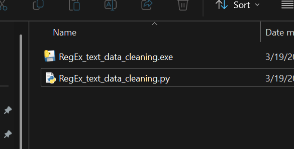

In the context of generating Question and Answer database of governemnt and legal documents, large number of data has to be gathered and cleaned. initially scraped government, legal documents contains various patterns or formatting issues, such as numbered lists, special characters, and certain formatting anomalies that need to be cleaned, standardized, or modified for easier readability or consistency.
The solution involves using regular expressions (regex) to identify and replace these patterns in the input text. Multiple patterns are defined to capture different formatting issues such as numbered lists, specific symbols, and unnecessary line breaks. Once matched, the script applies a specific transformation to reformat or remove parts of the text. Key operations include: Removing or modifying certain patterns. Replacing specific character sequences. Adjusting the layout of headings, lists, and certain clauses for consistency. Handling specific formatting like converting numbers to standard list formats or removing specific tags.
 The script cleans the text by removing or altering unnecessary formatting, standardizing lists and clause formatting, and generally cleaning the content. The modified text is then copied to the clipboard for further use or processing.
The script is highly dependent on regex patterns that are hardcoded and may not handle variations in input text outside the defined patterns. There is no validation to ensure the input text is correctly formatted before being processed, which could lead to errors or undesired results if the text differs from the expected structure.
Future improvements could include dynamic language support, a user-friendly interface, customizable cleaning patterns, better error handling, and parallel processing. Integration with cloud services, text editors, and advanced features like semantic cleaning and auto-correction would enhance functionality.